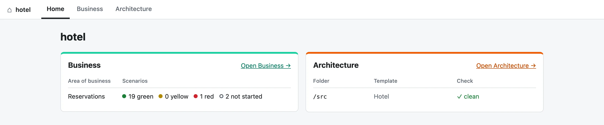

Build a barn. Everything under one roof.
A barn is a software project with its story map and its architecture ready to use. One command builds it, one app shows what the business needs and what shape the code is in, side by side, and everything it knows is committed with your code.

Home, Spec and Ark.
Home is where the barn stands: every area of business with its scenarios counted by colour, and your project’s folder with whether it still fits its template.
Spec is Barnspec: the story map, its scenarios and the work behind them. Ark is Barnark: your project’s folder, the architecture it follows, and a check of it.
The two are kept apart on purpose. Each speaks its own language, and the home page is where you see both at once.
Right from the first commit.
Build a barn in a new folder: a Composer project with src/ scaffolded from the architecture you choose, an empty story map and a git repository, all installed.
Barn is for new projects. It doesn’t take in an existing codebase and list everything that doesn’t fit. It keeps a new one well specified and well shaped from the start.
$ barn build my-shop # a new barn
$ cd my-shop
$ barn gui # Home, Spec, Ark
$ barn status # the home page, in the terminalManage the Barn apps you use.
Add Barntree, Barnark or Barnspec from your Composer project’s root, or get all three with barn add all.
Update or remove an app with one command. Barn asks you to confirm before making changes, and your project’s .barn/ data stays put when you remove an app.
Use barn apps to see what’s installed. Open an editor from the project root or any subfolder. Plain barn gui opens the dashboard.
barn add barntree
barn apps
barn gui barntree
barn update barntree
barn remove barntreeWhat a barn is made of.
For when you want the detail.
The barn folderOne place, committed with your code
my-shop/
.barn/
barn/settings.json # names the barn
barnspec/ # Barnspec: areas of business, scenarios and work
settings.json # where generated test ports go
barnark/ # your project’s template and any others of your own
barntree/trees/ # your Templates, once you use Barntree
composer.json
src/
tests/A barn is any project with a .barn/ folder. Each tool keeps its settings and records in its own folder there. The tools find the nearest barn, so commands such as barnspec show and barnark template:check work from deep in src/. To use the tools without installing Barn, create the .barn/ folder with barnspec init, barnark init, barntree init or the offer in any of their browser apps. Outside a barn, commands that need one write nothing and say where they looked.
BuildingWhat barn build asks and makes
It asks for the barn’s name, its Composer package, its root namespace and the architecture for src/, suggesting each from the folder’s name, with Domain Driven Design as the default. Then it asks what to call the project’s template, your own copy of that architecture, with no suggestion. Every answer can be given as an option instead. The folder has to be new or empty.
$ barn build shop --package=acme/shop --namespace="Acme\Shop" --template=Library --template-name=ShopIt runs git init without committing anything and then composer install; --no-install leaves that to you.
The appOne server, three tabs
barn gui serves the Barnspec and Barnark apps as the Spec and Ark tabs, with the home page beside them, from one local server. Started outside a barn, it offers to build one, showing composer install as it runs, and then serves it.
Build your first barn.
Barn needs PHP 8.5 with the ds extension, Composer and git.
$ composer global require rmb32/barn-cli
$ barn build my-shop
$ cd my-shop && barn gui